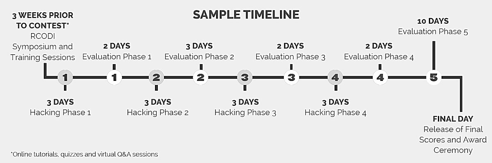

Hack Overview
Hacks are the main activity on the IronHacks platform.
Hack Process
A Hack is a an iterative multiphase process, where competing participants have access to tutorials, standardized libraries and packages, and virtual help sessions. After each phase, submissions are evaluated with the help of machine intelligence and human experts.

A typical hack timeline is made up of the following steps:
- Hack creation and setup
- Registration is opened
- Forum posts and tutorials become available
- Hack Q&A and live infosessions take place
- Registration is closed
- The hack task document and rules are published
- Participants are assigned to cohorts (*optional)
- The first submission is completed
- Results are published to the dashboard
- Additional forum posts are posted and infosessions take place (*optional)
- Additional submissions and results
- Final submission round
- Final scores are calculated and published
- Winners are announced
- Top solutions are published
Hack Features
Registration Start Date - The date when registration is open
Registration End Date - The date when registration is closed
Hack Pages
- Calendar - This page displays and embedded Google Calendar with upcoming events and deadlines.
- Forum - A forum with informational posts where participants can leave comments and ask questions.
- Overview - This page outlines all of the hack details and information to users except for the specifics included in the task.
- Results - This page displays the users individual scores after each submission and may show additional information about the users cohort and overall summary information.
- Rules - This page shows the rules and terms for the hack.
- Submissions - The submissions page displays a list of completed and upcoming submissions and their dates.
- Task - The task page shows the detailed info required for the submissions, scoring methods, and how to access relevant data.
- Tutorials - This page displays a list of hack specific tutorials that can be used to help users learn about features of the platform or how to use specific packages or types of analysis.
Hack Surveys
IronHacks supports Qualtrics surveys integration in several places throughout the hack including:
- During hack registration (used to assess participant background and skill diversity)
- Before viewing the hack task document (can be used to show terms and conditions and research consent forms)
- During each submission (can be used to collect additional data about the submission)